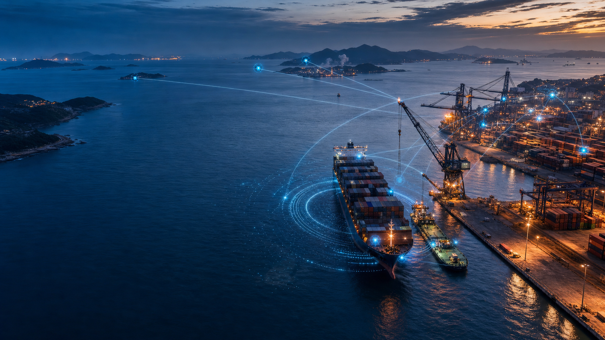
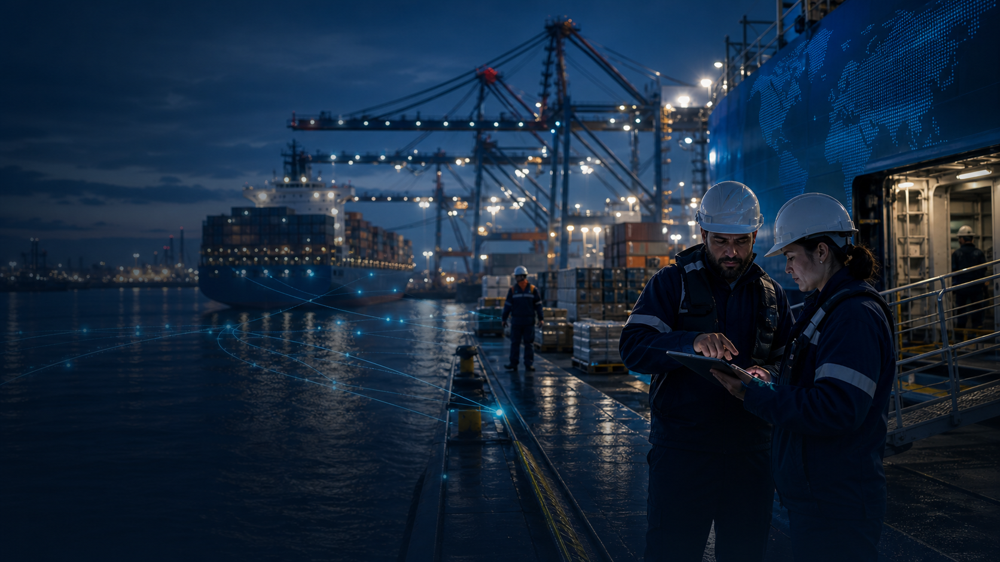
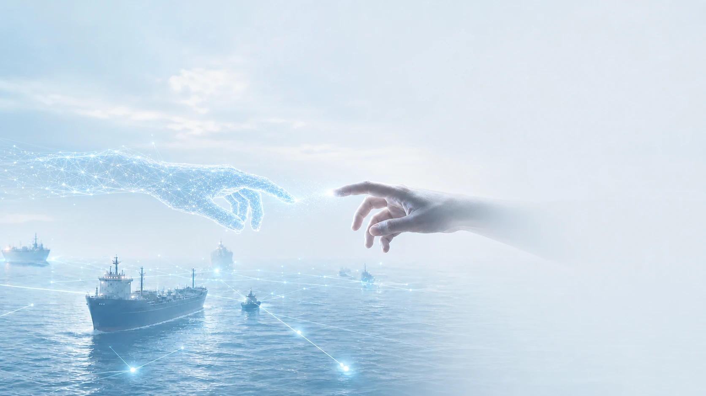

初期 · 资源整合
让碎片化资源
重塑海事生态
平台把分散在港口、船舶、服务商与监管端的能力重新连接。粒子由散沙汇聚成环，代表十二项海事服务从单点供给走向协同网络。
核心服务持续开放与接入
- shopping_cart采购供应
- restaurant伙食供应
- groups船员服务
- shield口岸监管
- sailing海事服务
- anchor港航服务
- directions_boat驳船配送
- account_balance金融服务
- receipt_long税务服务
- cloud海洋气象
- radar船舶动态
- warehouse仓储物流

中期 · Agent 赋能
Agent赋能海事
全生命周期
围绕船舶靠港与抛锚计划，Agent 串联驳船配送、吊机装卸和供应商履约。高速数据流不替代业务，而是让每个节点更早看见、更快推进。
解决未知商品货源寻找，避免大量规格不匹配
解决采购订单执行速度，减少人工比价混乱
解决运输供应时效性，加强一单多供且降低成本
ORDER EXECUTION数据网络
- 01清单识别需求自动归集
- 02规格匹配SKU 与历史标准比对
- 03智能询价服务商并行响应
- 04比价决策价格、时效与风险综合判断
- 05履约协同数据各方流转协同
订单执行节点实时联通

DATA LOOP数据持续沉淀每一笔真实履约都成为下一次服务优化依据
- SKU 规格
- 价格波动
- 采购频次
- 企业定位
- 履约时效
- 服务评分
后期：数据反哺
数据沉淀反哺
海事生态
平台沉淀规格、价格、采购量、运力和履约表现，为服务商提供备货与配送建议，也为企业提供更准确的定位，形成持续转动的数据闭环。
服务商加强企业定位
采购企业提高找货源效率
平台生态通过数据完善海事全生命周期